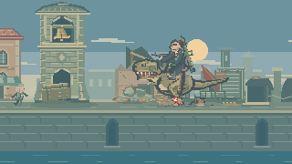
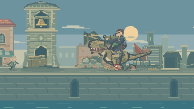
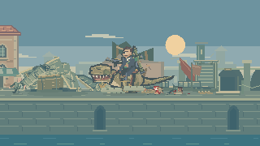
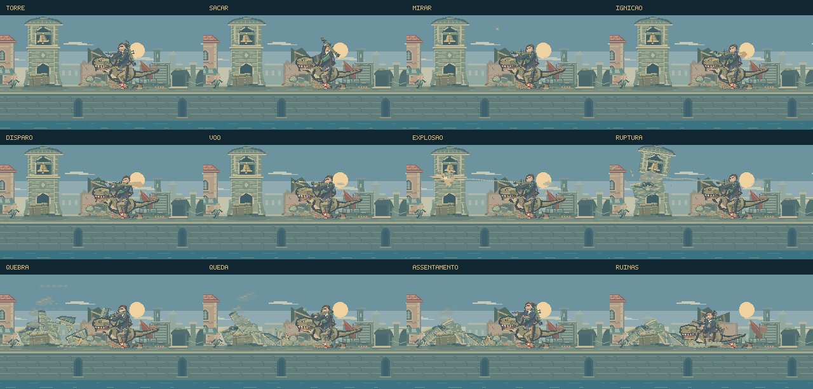

A queda da torre.
O cavaleiro deixa o fuzil na bandoleira, retira o lançador das costas e apoia a arma no ombro. O foguete sai do tubo, acelera e rompe a alvenaria. A cobertura se separa, o campanário se fragmenta no impacto e os escombros quicam, deslizam e se acomodam.
Jogar o encontroVer a sequência- Sacar
- Firmar e mirar
- Disparar
- Ruptura
- Queda
- Retomar a patrulha
Preparação, impacto e consequência.
Terceira revisão: materiais, propulsão, fumaça e contatos. São 16 segundos a 60 quadros por segundo, com o renderizador do jogo. Composição dirigida, sem áudio e sem o combate em primeiro plano. A câmera fica no Bastião para mostrar a animação e as atividades que vêm depois. Não é uma partida gravada.
Os efeitos acompanham a matéria.
A fumaça nasce na abertura da alvenaria enquanto a peça cai. Cada emissão se solta e deriva por conta própria; a origem acompanha os escombros até o chão. A poeira se expande e perde opacidade, sem encolher antes de desaparecer.
Pedra, telha e madeira têm formas e tons próprios. A suspensão do sino rompe em lascas de madeira, deixando travessas partidas nos pilares. O badalo reage à aceleração do sino e encontra o limite da borda interna. A poeira dos contatos acompanha a direção do deslizamento, e as sombras permanecem quando as peças se acomodam.
O foguete revela o corpo do motor ao sair do tubo. Aletas, chama e fumaça partem de sua cauda; o rastro começa como um filamento e se dispersa em pequenos volumes. Na torre, o clarão alcança por um instante as cornijas e o bronze, enquanto a abertura expõe pedra lascada sob a superfície marcada pela explosão.

Uma construção que pode se romper.
Fiadas desencontradas, pedras de canto, profundidade nos arcos, cornijas, telhas e suportes do sino dão estrutura à torre. A mesma alvenaria ganha trincas, bordas quebradas e marcas de fuligem durante a queda.
O topo inclina antes de se soltar. As peças herdam esse movimento e passam a cair com gravidade e rotação. A cobertura se divide em duas partes; ao primeiro impacto, o campanário se rompe em pilares e travessas. O toque do sino acompanha seu contato real com a superfície.
O gesto prepara o disparo.
O lançador percorre um arco das costas ao ombro. As mãos acompanham suas empunhaduras, o tronco firma a postura e o dinossauro reage ao disparo. O foguete usa o mesmo sprite da munição carregada e começa exatamente em sua posição.
A saída, a ignição da propulsão e a aceleração têm tempos próprios. A fumaça nasce ao longo da trajetória, fica para trás e se dispersa. Depois do impacto, a mira e a postura acompanham a queda antes do retorno ao fuzil.


Uma cena dentro do combate.
O diretor reserva esse acontecimento para depois das primeiras interações no Bastião, quando torre e cavaleiro cabem no enquadramento. Feka continua sob controle do jogador.
Se a câmera se afasta antes do disparo, o cavaleiro recolhe a arma e pode tentar novamente mais tarde. Um projétil já lançado conclui sua trajetória. A torre cai uma única vez; as buscas, ataques a objetos e patrulhas continuam depois dela.
O ritmo da queda.

O impacto começa com um clarão localizado e uma expansão quente; depois vêm projeção de material, argamassa, poeira e fumaça. Fragmentos maiores giram, perdem energia no contato e permanecem na rua. Os grãos menores têm rebotes curtos. Sons e nuvens de poeira acompanham os contatos físicos, em vez de um relógio fixo.
A simulação local considera o piso, a base preservada e as peças já acomodadas. O movimento reduzido atenua os efeitos decorativos e mantém a trajetória principal legível. Toda a ação continua no fundo, preservando a leitura dos ataques da Vanguarda.
Direção, tempos e integração · Registro da composição · Os quatro pátios · Buscas nos escombros
Publicação pelo fluxo do projeto: build de produção, sem suíte de testes, typecheck ou revisão de navegador. A composição mostra a arte e a sequência; a leitura durante uma luta completa não foi avaliada nesta rodada.